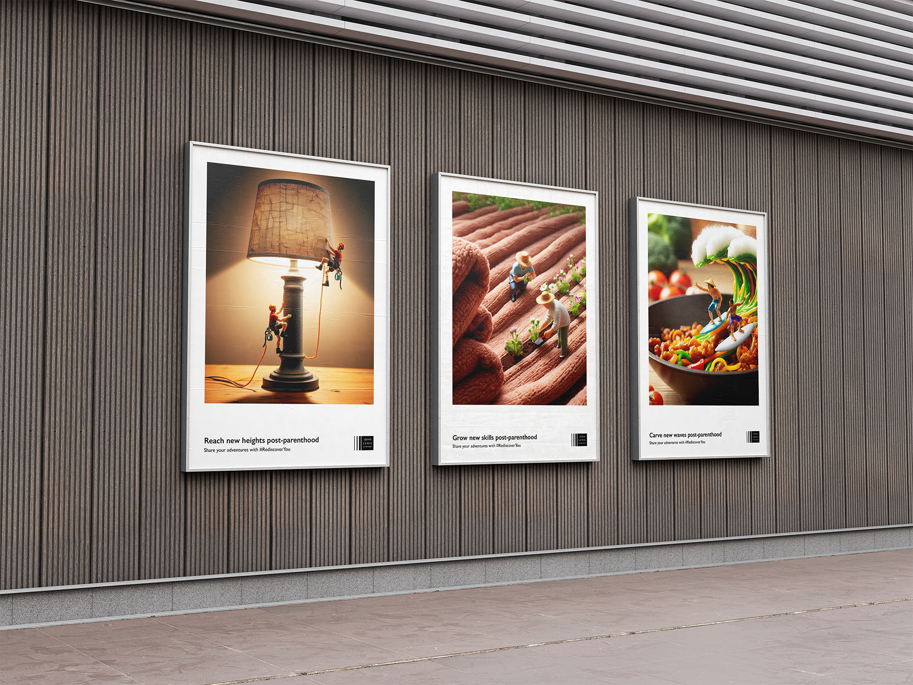
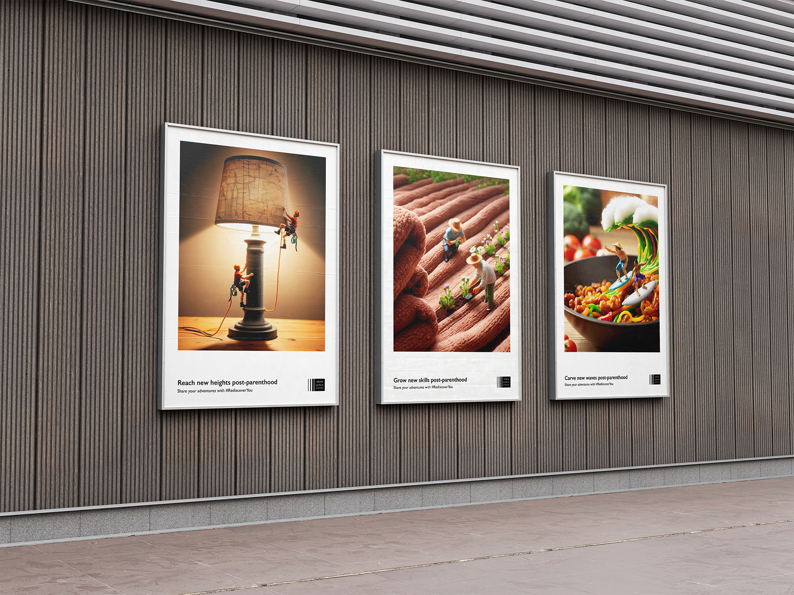
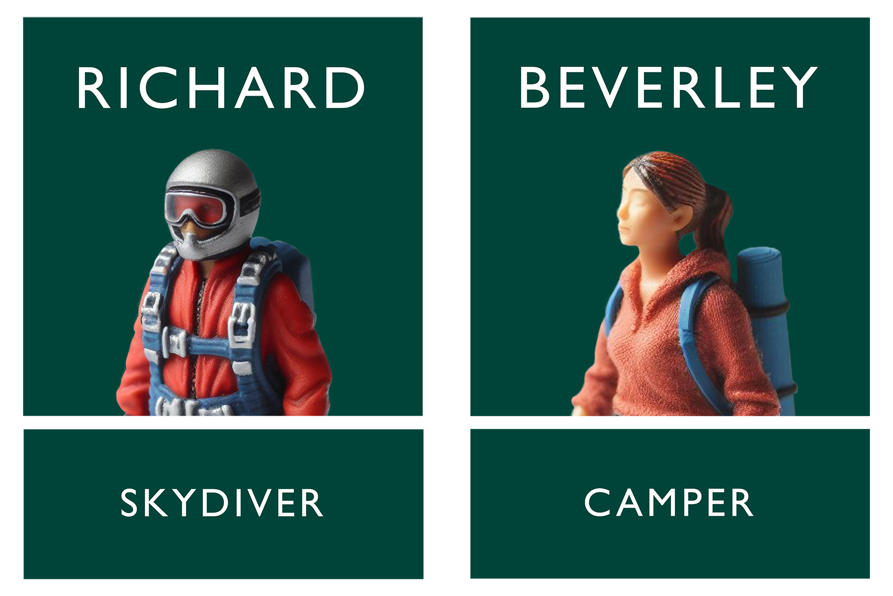
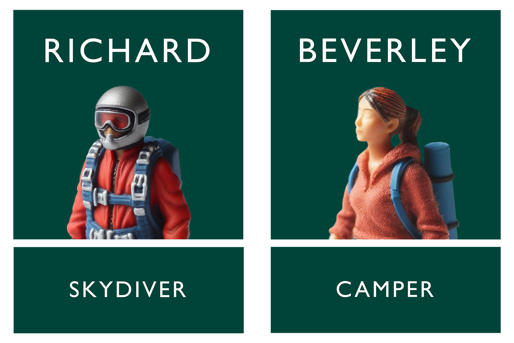

Requirements
• 10s+ social animation
• 3x Printed posters
• 3x billboard posters
• 2x Staff uniform badges
• 2x social media mockups
• 3x Website Pages
Click play on the video to the right for a better explanation of the
project!


 


The John Lewis website was redesigned to promote the campaign, with an explanation, stories and most importantly "little meet-ups" — which was the campaigns solution to helping those lost parents find something new to do in their lives.


The social media promoted stories and presented the visuals and typography in a beautiful way that would help the campaign bring in more attention.
 

If you want to see it as a PDF, have a click of the image!